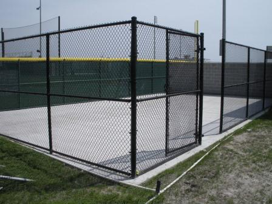
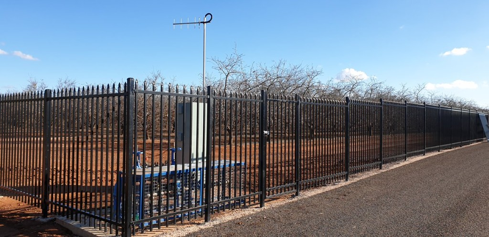
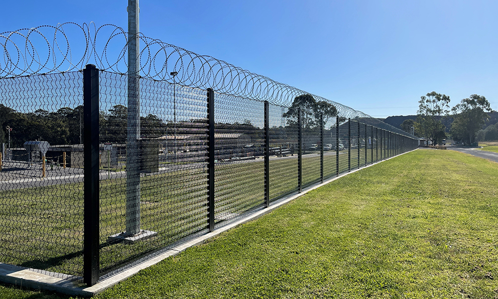

Chainlink fencing
Open-visibility fencing for boundaries, sporting enclosures, schools, and light commercial sites with durable galvanised mesh.
Learn moreChainlink · Diplomat · Security Fencing · Licensed & insured
Three focused fencing systems across Sydney for homes, businesses, industrial yards, and public spaces
What we do
Johnstone Fencing installs chainlink, diplomat, and security fencing only. Each system is selected to match your site conditions, access needs, and required level of protection. See our services for fencing types and applications.

Open-visibility fencing for boundaries, sporting enclosures, schools, and light commercial sites with durable galvanised mesh.
Learn more
Strong tubular steel fencing for front boundaries, strata, schools, and commercial sites where a clean finish and controlled access matter.
Learn more
Higher-security systems including anti-climb options, reinforced posts, and secure gates for critical infrastructure and restricted areas.
Learn moreWhy Johnstone Fencing
From club committees to council works, we keep communication clear, hit agreed timelines, and leave sites safe and tidy.
Service areas
We install chainlink, diplomat, and security fencing across Greater Sydney (all areas), the Central Coast, Newcastle and the Hunter, and the Southern Highlands — for sports, rural, government, and residential projects. We still work daily in Western Sydney (e.g. Liverpool, Campbelltown, Parramatta) and travel throughout the region for the right job. Explore chainlink options, diplomat fencing, and security systems before you request a quote.
Common questions
Yes. We work on residential, commercial, sports, rural, and public-sector sites. See our full fencing services.
We cover Greater Sydney, the Central Coast, Newcastle and the Hunter, and the Southern Highlands. Common enquiries come from Parramatta, Blacktown, Penrith, Campbelltown, Liverpool, Castle Hill, Hornsby, Gosford, and Newcastle.
We install chainlink, diplomat, and security fencing. We can include matching gates and access solutions within these systems.
Call 0400 755 781 or use the quote form with your suburb, site type, and approximate fence length.
Customer feedback
We maintain an active hipages profile for Johnstone Civil Pty Ltd (Johnstone Fencing). There are 26 positive recommendations — below is a selection.
“Dylan installed 175m of gal chainwire fencing at 1500mm high. He went above and beyond to complete this project. We would definitely recommend Johnstone Civil — if you are looking for a contractor with an eye for detail, then you have found them.”
“Dylan arrived for a free quote very quickly. Reliable and professional, very competitive pricing, and the quality of the workmanship was very impressive with high attention to detail. Overall I am a very satisfied customer and highly recommend Johnstone Civil.”
“Excellent service. Great communication. Completed the work professionally. Would hire again.”
“Excellent communication, transparency and quality of work from initial discussion to completion of a tricky job.”
“Dylan was easy to talk to and came out for a quote ASAP. Constant communication on materials and scheduling. He ensured our pool fence was compliant, liaising with council where needed. A pleasure to deal with.”
“Great service, completed a 1km impossible job on the hills of Razorback. You have to see it to believe it!”
Get a free quote today with your site details, approximate metres, and preferred fencing type.